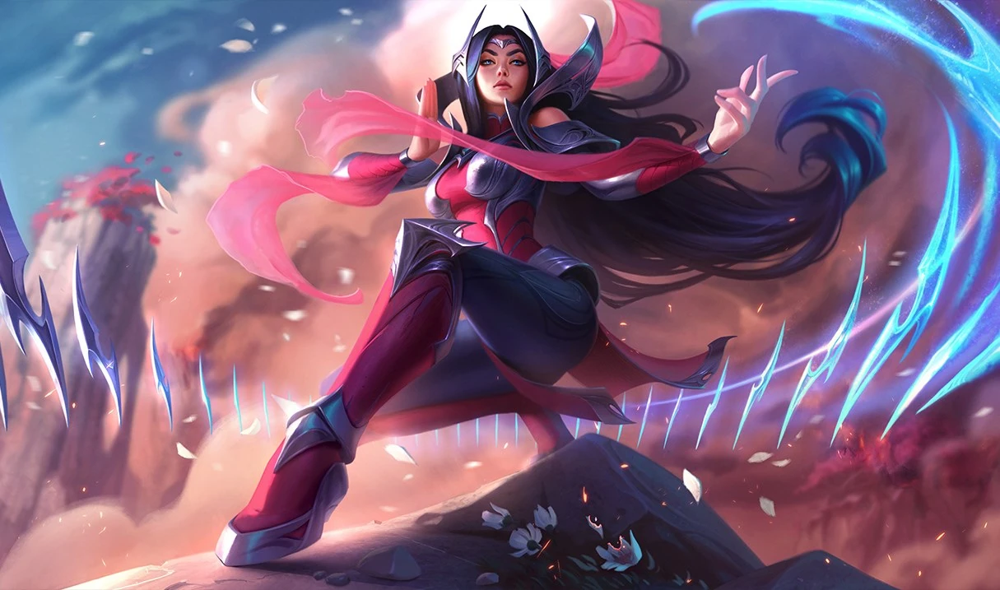

Lab04: My League of Legends Champion Pool
Description
Irelia the Bladedancer, demonstrating her prowess at an ancient form of dance, which allows her to levitate an arsenal of deadly blades.
.Webp File type
The most modern image type that I used for this project, introduced in 2010, and designed to minimize compression and loss of resolution on the web! Also supporting millions of colors, it uses both lossless and lossy compression which gives it an edge in regards to compression when converting from .gif or .jpg images.
Why Irelia?
Irelia is the most fun champion to play in the entire game, hands down, bar none. Anyone who disagrees with me is wrong, as this is objectively true. Requiring the most skill out of all the champions I play, you have to have very precise clicks and a high actions per minute to play her. There is very little room for error, and if you mess up even just a little bit, you will feel nothing but pain. This is probably why I find her so satisfying!